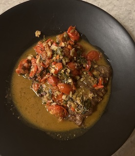

Steak Pizzaiola

Southern Italian flank steak with crushed tomatoes
This is a zesty steak recipe that was handed down to me from a good friend from Malta.
It is a quick and easy recipe to follow. A half hour in the kitchen and you
will have a resteraunt quality steak. You will definatly want to open a
good bottle of Chianti with this!
Ingredients
- 1/2 lb flank, hanger, or skirt steak (per serving)
- Sea salt & fresh ground pepper
- EVO
- 1 can of crushed tomatoes
- White wine
- Kalamata olives (pitted)
- Red pepper (spicey ones are optional)
- Capers
- Fresh garlic
- Oregano
- Fresh parsley
- Anchovies (optional)
Directions
- Season steak with salt & pepper. You can hammer the the meat if so desired for more tenderness.
- Sauteè in EVO for about 30 seconds on each side untill brown and crispy
- Pour over 1 glass of wine into the pan
- Let the steak and wine simmer untill the wine fully evaporates
Remove the steak from the pan and set aside
- Dice red pepper, 3-4 cloves of garlic, olives, and anchovies (if using) and add to the pan
- Add capers and crushed tomates
- Add a pinch of oregano
- Add half a glass of water
- Chop some parsley and add
- Add some s&p
- Cover with a lid and let simmer for 10 minutes
- Remove lid and add steak, let simmer for an additional 3-5 minutes
- ENJOY!